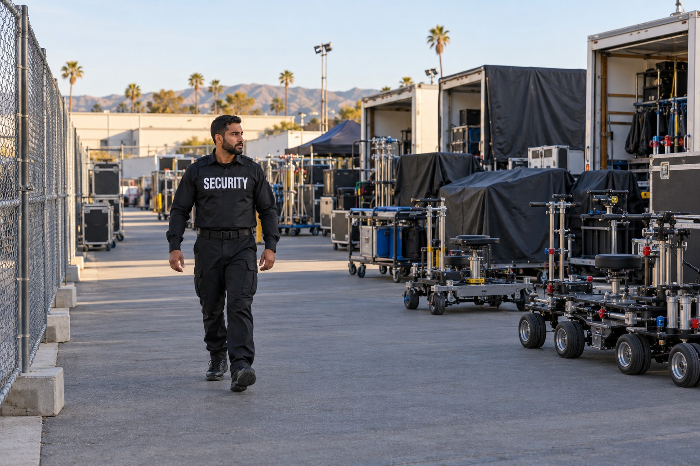

Film and Production Sites

A production location may bring crew members, vendors, performers, equipment and public interest together in one place. Security personnel can support the distinction between authorized production activity and people who do not have approval to enter the set. The officer’s role should fit the location manager’s expectations and the responsibilities agreed with the production.
Security for an Active Production Location
A studio related location and a public facing location shoot can involve different conditions. Paradigm reviews the actual setting rather than representing every shoot as the same assignment. The public page explains the service without disclosing movement details, set procedures or information about individual cast members.
Set Access, Equipment and Trailers
Production security can include access responsibilities at a closed set and observation of equipment, trailers and other property included in the assignment. Equipment coverage between production days can be reviewed separately from access support during filming. The description should make clear which areas and responsibilities are part of the service.
Officers can communicate concerns about unauthorized presence, disturbances or incidents involving production property. They are not a substitute for production accounting, equipment management or the location department. Security records document relevant observations and actions while the production retains its own responsibilities for inventory and business decisions.
Crew, Talent and Location Coordination
Security at a production site can support concerns affecting crew and talent within the agreed assignment. Personal protection for a particular individual is a distinct service and should not be assumed to be included in every set security post. Paradigm can review both needs while keeping the roles clear.
Coordination with location personnel is important where a shoot interacts with the surrounding property or public space. This page does not claim independent police authority or authorization to control public streets. BSIS publishes California security guard registration requirements. Permit conditions and any location specific requirements must be confirmed by the appropriate production representatives.
Production Security in Southern California
Paradigm supports productions in Los Angeles County, including inquiries involving greater Los Angeles and established filming communities. Clients proposing locations in San Bernardino County can review availability and assignment suitability directly. The service relationship is confirmed according to the actual production location and needs.
Contact Paradigm to describe the production and the kind of security support required. We will review set access, property observation and coordination with your authorized team. Sensitive production details and arrangements involving cast, crew or equipment remain part of the private consultation.